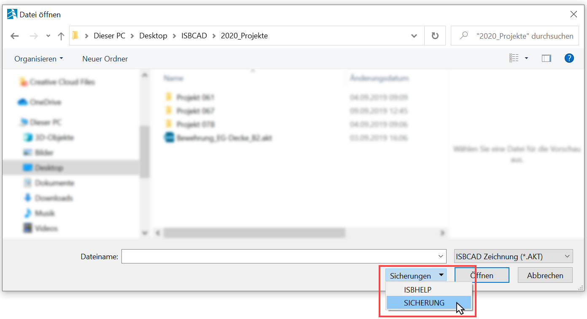
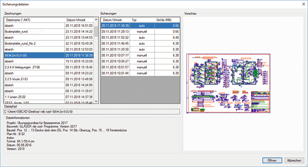

Dieser Sicherungsmechanismus hilft Ihnen dabei, mehrere Revisionen einer Zeichnung anzulegen. Wenn Sie z. B. zu einer früheren Zeichnungsversion zurückkehren möchten, können Sie die entsprechende Sicherungsdatei in einer Liste auswählen und einlesen. Dadurch lassen sich ungewollte Änderungen an einer Zeichnung leichter rückgängig machen.
·Jedes Mal, wenn Sie die Zeichnung manuell speichern oder diese automatisch gespeichert wird, wird eine Kopie der Zeichnung angelegt.
·Die Zeitspanne, nach der eine automatische Sicherung angelegt werden soll, können Sie in den Systemdaten einstellen. Ebenfalls lässt sich definieren, wie viel Speicherplatz für die Sicherungen der Zeichnungen reserviert werden soll. Wird dieser Grenzwert überschritten, werden trotzdem weitere Sicherungen angelegt - lediglich die ältesten Sicherungen werden von der Festplatte entfernt, bis der Grenzwert wieder unterschritten wird.
·Die verschiedenen Sicherungen einer Zeichnung bleiben erhalten, wenn Sie die Zeichnungsversion unter dem ursprünglichen Dateinamen speichern.
·Wenn Sie versehentlich eine frühere Version wiederherstellen, bleiben die danach gespeicherten Versionen erhalten. Wählen Sie in der Liste der Sicherungen die Version aus, mit der Sie arbeiten möchten.
|
Hinweis: |
|
Sie sollten diese Funktion nur als unterstützende Sicherungsmaßnahme ansehen. Diese Funktion ersetzt NICHT die regelmäßige Datensicherung, wie z. B. ein Backup auf einer externen Festplatte! |

So öffnen Sie den Sicherungsdialog
§Klicken Sie im Funktionsbereich auf [Datei | Öffnen] oder wählen Sie in der ISBCAD Menüleiste [Datei | Öffnen].
§Klicken Sie im unteren Bereich auf Sicherungen und anschließend auf SICHERUNG.
Der Dialog Sicherungsdateien wird geöffnet.
 |
So lesen Sie eine Sicherungsdatei ein
§Wählen Sie in der Spalte Zeichnungen die entsprechende Zeichnung. Mit den Pfeiltasten der Tastatur können Sie die Tabelleneinträge wechseln.
Falls eine nicht manuell gespeicherte Zeichnung automatisch gesichert worden ist, wird die Zeichnung mit "isbsich" benannt.
§Wählen Sie in der Spalte Sicherungen die entsprechende Revision und klicken Sie auf Öffnen oder drücken Sie die Eingabetaste.
In der Spalte Sicherungen werden Ihnen alle Revisionen der Zeichnung angezeigt, die entweder manuell oder automatisch angelegt worden sind.
So speichern Sie eine Sicherungsdatei
§Klicken Sie im Funktionsbereich auf [Datei | Speich] oder wählen Sie in der ISBCAD Menüleiste [Datei | Speichern].
§Führen Sie einen der folgenden Schritte durch:
a)Wenn die Historie der Revisionen beibehalten und fortgeführt werden soll, überschreiben Sie die ursprüngliche Zeichnungsdatei. b)Soll eine neue Historie angelegt werden, speichern Sie die Zeichnung unter einem neuen Dateinamen. |
Optionen im Dialog "Sicherungsdateien"
 |
Zeichnungen
In der Liste werden alle Zeichnungen angezeigt, zu denen mindestens eine Sicherungsdatei angelegt worden ist.
Sie können die Listen absteigend oder aufsteigend sortieren, indem Sie auf die Tabellenüberschrift klicken. Mit den Pfeiltasten der Tastatur können Sie die Tabelleneinträge wechseln. Mit der Tab-Taste wechseln Sie die Tabellenüberschriften und Einträge.
Dateiname (*AKT)
Zeigt den Zeichnungsnamen an. Klicken Sie auf einen Dateinamen, um sich die zugehörigen Sicherungen anzeigen zu lassen.
Nicht gespeicherte Zeichnungen, werden mit "isbsich" benannt.
Datum / Uhrzeit
Zeigt an, wann die Zeichnung zuletzt gesichert worden ist.
Sicherungen
Sie können die Listen absteigend oder aufsteigend sortieren, indem Sie auf die Tabellenüberschrift klicken. Mit den Pfeiltasten der Tastatur können Sie die Tabelleneinträge wechseln. Mit der Tab-Taste wechseln Sie die Tabellenüberschriften und Einträge.
Datum / Uhrzeit
Zeigt an, zu welchem Zeitpunkt und ob die Sicherung manuell oder automatisch erstellt worden ist.
Typ
manuell |
- Wird angezeigt, wenn Sie die Zeichnung über [Datei → Speich/Sicher] speichern bzw. sichern. |
automatisch |
- Wird angezeigt, wenn die Zeichnung in der Zeitspanne gespeichert wurde, die in den Systemdaten eingestellt ist. |
Vorschau
Wenn Sie eine Zeichnung oder eine Sicherung anklicken, wird hier eine Vorschau der Datei angezeigt.
Dateipfad
Zeigt den zugehörigen Dateinamen mit der kompletten Pfadangabe an.
Dateiinformationen
Zeigt die Informationen an, die in der Planbeschreibung angegeben wurden. [Konst3 | PlanBe].
Schließt den Dialog und öffnet die markierte Sicherung.

Schließt den Dialog und Sie gelangen wieder zum Dialog [Datei öffnen].
Zugehörige Aufgaben:
·Sicherungsdialog über die ISBCAD Startseite öffnen
Siehe auch: